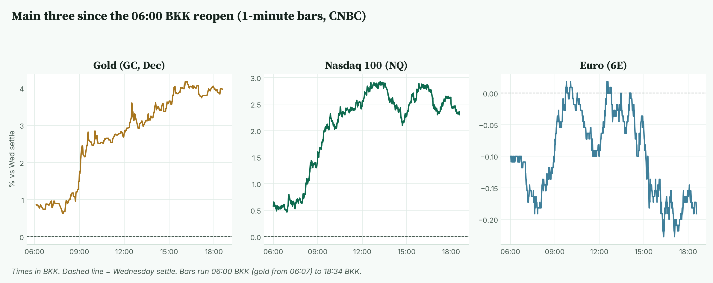
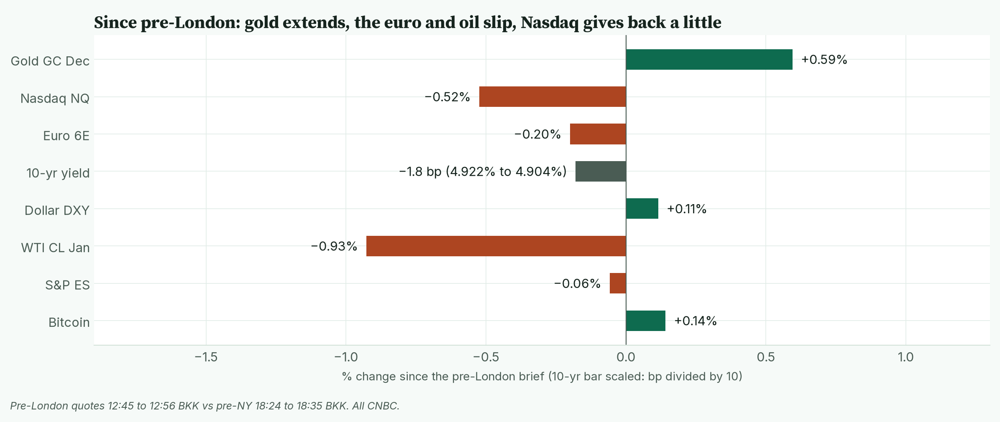
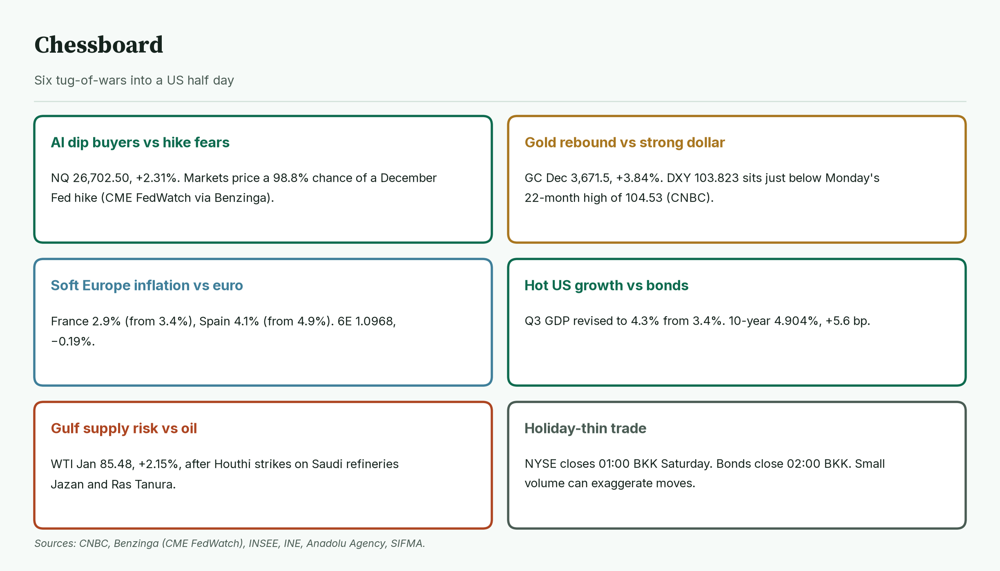
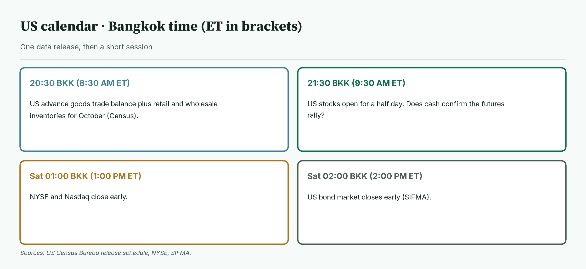
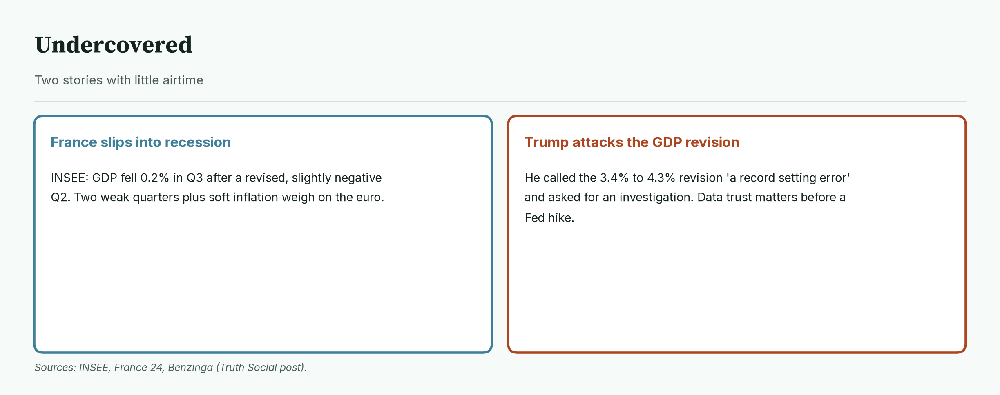
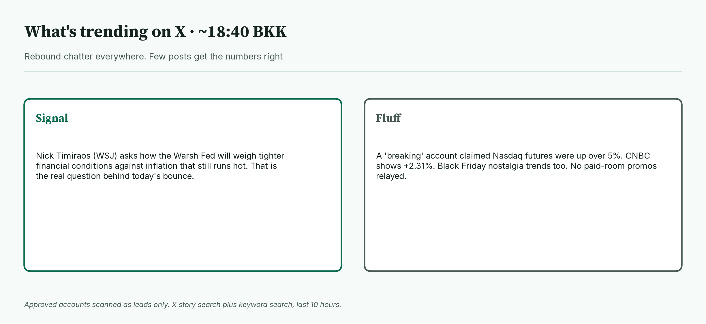

April · Market Intel, pre-NY · Fri Nov 27, 2026 · ~18:45 BKK / ~06:45 New York
Headline: Gold futures extend their rebound to 3,671.5 (+3.84%). Nasdaq futures cool to 26,702.50 (+2.31%) from their 26,868.75 high. Euro futures slip to 1.0968 (−0.19%) after soft French and Spanish inflation. US trade data at 20:30 BKK and the half-day open at 21:30 BKK decide the session.
So what: the rebound is real in futures but untested in cash. A 98.8% priced December Fed hike and thin holiday volume mean it can fade fast.
Lean edition: half length to save usage. All levels, moves and quote times are checked.
1) Top signals
 Caption: Futures at 18:24–18:25 BKK versus Wednesday's settle. Gold leads, Nasdaq holds most of its jump, and the euro dips.
Caption: Futures at 18:24–18:25 BKK versus Wednesday's settle. Gold leads, Nasdaq holds most of its jump, and the euro dips.
- Gold futures +3.84%, up from +3.22% at pre-London (CNBC).
- Euro futures −0.19% after France and Spain inflation came in well below last month (INSEE, INE).
- Nasdaq futures +2.31%, off the +2.85% pre-London print (CNBC).
2) Main instruments The three main contracts since the 06:00 BKK reopen, as a % move from Wednesday's settle. Gold kept climbing; Nasdaq peaked after midday; the euro fell after Europe's data. |
 Caption: The three main contracts since the 06:00 BKK reopen, as a % move from Wednesday's settle. Gold kept climbing; Nasdaq peaked after midday; the euro fell after Europe's data.
(Quotes are CNBC futures at 18:24–18:25 BKK (06:24–06:25 New York). There was no settle on Thanksgiving, so % moves are against Wednesday's settle. Ranges use CNBC 1-minute bars since 06:00 BKK, because Yahoo's 1-minute feed returned no bars again. Backup source in use.)
Caption: The three main contracts since the 06:00 BKK reopen, as a % move from Wednesday's settle. Gold kept climbing; Nasdaq peaked after midday; the euro fell after Europe's data.
(Quotes are CNBC futures at 18:24–18:25 BKK (06:24–06:25 New York). There was no settle on Thanksgiving, so % moves are against Wednesday's settle. Ranges use CNBC 1-minute bars since 06:00 BKK, because Yahoo's 1-minute feed returned no bars again. Backup source in use.)
- Gold futures (GC, Dec): 3,671.5, +3.84%, at 18:24 BKK. Driver: bargain hunting after gold hit its lowest since September 2025 on Wednesday, with silver up even more (CNBC). Wednesday's settle was 3,535.8. The range since 06:07 BKK (Dec's first trade) is 3,558.0 (07:52 BKK) to 3,683.5 (16:08 BKK). It sits near the high. Spot gold is 3,675.58, +3.07% (CNBC, 18:35 BKK).
- Nasdaq 100 futures (NQ, Dec): 26,702.50, +2.31%, at 18:25 BKK. Driver: dip buyers back in battered AI and chip stocks after the holiday (Barron's, Investing.com). Wednesday's settle was 26,100.25. The range since 06:00 BKK is 26,219.00 (06:55 BKK) to 26,868.75 (13:11 BKK). It sits in the upper half.
- Euro futures (6E, Dec): 1.0968, −0.19%, at 18:25 BKK. Driver: softer inflation in France and Spain cuts the case for more ECB rate hikes (Bloomberg). Wednesday's settle was 1.0989. The range since 06:00 BKK is 1.0962 (17:05 BKK) to 1.0994 (12:32 BKK). It sits near the low.
3) Rates, FX and oil What moved since the pre-London brief. Gold and the dollar rose; the euro, oil and Nasdaq slipped. |
 Caption: What moved since the pre-London brief. Gold and the dollar rose; the euro, oil and Nasdaq slipped.
Context. The dollar index (DXY, the dollar against six major currencies) is 103.823, +0.15% (CNBC, 18:35 BKK). It hit 104.53 on Monday, its highest since March 2025 (CNBC). The 10-year US yield (what the US government pays to borrow for 10 years) is 4.904%, up 5.6 basis points versus the prior close of 4.848% (CNBC, 18:33 BKK; a basis point is 0.01 percentage point). That is 1.8 bp below the pre-London print. The 2-year is 4.681% (CNBC, 18:35 BKK). The VIX (the "fear gauge" built from S&P 500 option prices) is 25.02, −6.64% (CNBC, 18:35 BKK, indicative before the cash open). US oil (CL, January) is 85.48, +2.15% (CNBC, 18:25 BKK), ranging 84.77 to 86.60 since 06:00 BKK. Brent (January) is 96.84, +0.28%, ranging 96.08 to 98.06 since 08:00 BKK (CNBC). S&P 500 futures (ES) are 7,320.25, +1.73% (CNBC, 18:25 BKK), ranging 7,236.50 to 7,343.00 since 06:00 BKK. Bitcoin is $61,712, +1.71% versus CNBC's previous close (CNBC/Coin Metrics, 18:35 BKK). USD/JPY is 159.45 (CNBC, 18:35 BKK).
Caption: What moved since the pre-London brief. Gold and the dollar rose; the euro, oil and Nasdaq slipped.
Context. The dollar index (DXY, the dollar against six major currencies) is 103.823, +0.15% (CNBC, 18:35 BKK). It hit 104.53 on Monday, its highest since March 2025 (CNBC). The 10-year US yield (what the US government pays to borrow for 10 years) is 4.904%, up 5.6 basis points versus the prior close of 4.848% (CNBC, 18:33 BKK; a basis point is 0.01 percentage point). That is 1.8 bp below the pre-London print. The 2-year is 4.681% (CNBC, 18:35 BKK). The VIX (the "fear gauge" built from S&P 500 option prices) is 25.02, −6.64% (CNBC, 18:35 BKK, indicative before the cash open). US oil (CL, January) is 85.48, +2.15% (CNBC, 18:25 BKK), ranging 84.77 to 86.60 since 06:00 BKK. Brent (January) is 96.84, +0.28%, ranging 96.08 to 98.06 since 08:00 BKK (CNBC). S&P 500 futures (ES) are 7,320.25, +1.73% (CNBC, 18:25 BKK), ranging 7,236.50 to 7,343.00 since 06:00 BKK. Bitcoin is $61,712, +1.71% versus CNBC's previous close (CNBC/Coin Metrics, 18:35 BKK). USD/JPY is 159.45 (CNBC, 18:35 BKK).
4) Chessboard Six tug-of-wars into a US half day. The Fed hike and Europe's soft data move the main three most. |
 Caption: Six tug-of-wars into a US half day. The Fed hike and Europe's soft data move the main three most.
Caption: Six tug-of-wars into a US half day. The Fed hike and Europe's soft data move the main three most.
- A December Fed hike is priced at 98.8% (CME FedWatch via Benzinga). That caps how far tech and gold can run.
- France's inflation fell to 2.9% from 3.4%; Spain's to 4.1% from 4.9% (INSEE, INE). Falling fuel prices did most of the work.
- US Q3 GDP was revised to 4.3% from 3.4% (Commerce Department via Benzinga). Strong growth keeps yields up.
- Houthi strikes hit Saudi refineries at Jazan and Ras Tanura (CNBC, Anadolu Agency). That keeps a floor under oil.
5) Premarket earnings and movers
Benzinga's premarket list (5:43 AM ET) has no fresh earnings, only news and follow-through:
- SpaceX (SPCX) +4.6% after Elon Musk pledged a yearly share donation to Trump Accounts.
- Alibaba ADRs +4.57% after Jack Ma visited its chip unit ahead of a Hong Kong listing (SCMP via Benzinga).
- Deere +1.4% after a 4.44% jump on Wednesday's results.
6) US data calendar (BKK times, ET in brackets) One data release, then a short session. Liquidity thins fast after the 01:00 BKK stock close. |
 Caption: One data release, then a short session. Liquidity thins fast after the 01:00 BKK stock close.
Caption: One data release, then a short session. Liquidity thins fast after the 01:00 BKK stock close.
- 20:30 BKK (8:30 AM ET): advance goods trade balance, plus retail and wholesale inventories for October (Census). Low impact, but the only US data today.
- 21:30 BKK (9:30 AM ET): US stocks open for a half day. The real test of the futures rally.
- Sat 01:00 BKK (1:00 PM ET): NYSE and Nasdaq close early.
- Sat 02:00 BKK (2:00 PM ET): US bond market closes early (SIFMA).
7) Scenarios and levels
- Gold: holding above 3,649.8 (the pre-London level) keeps the bounce alive, and 3,683.5 is the next test. A slip under 3,600 would point back to 3,558.0.
- Nasdaq: a firm cash open that clears 26,868.75 extends the rally. A weak open risks a slide back toward 26,219.00.
- Euro: a break under 1.0962 says soft-Europe wins. Back above 1.0994 would mean the dollar is fading.
8) Undercovered Two stories with little airtime. One weighs on the euro; one on trust in US data. |
 Caption: Two stories with little airtime. One weighs on the euro; one on trust in US data.
Caption: Two stories with little airtime. One weighs on the euro; one on trust in US data.
- France is in a technical recession (two quarters of shrinking output). INSEE says GDP fell 0.2% in Q3 after a revised, slightly negative Q2 (INSEE, France 24).
- Trump called the GDP revision "a record setting error" and asked for an investigation (Truth Social via Benzinga). Attacks on data matter when the Fed is about to hike.
9) X pulse Rebound chatter is everywhere. Few viral posts get the numbers right. |
 Caption: Rebound chatter is everywhere. Few viral posts get the numbers right.
Caption: Rebound chatter is everywhere. Few viral posts get the numbers right.
- Signal: Nick Timiraos (WSJ) asks how the Warsh Fed will weigh tighter financial conditions against inflation that still runs hot. Treat analyst posts as leads only.
- Fluff: a "breaking" account claimed Nasdaq futures were up over 5%. CNBC shows +2.31%. Claims of the "worst November since 2008" are unconfirmed. Virality is not importance.
Confidence: Futures levels: high (CNBC, Yahoo cross-check). Session ranges: CNBC 1-minute bars since 06:00 BKK (Yahoo 1-minute feed empty; backup used). DXY, yields, VIX, oil, yen and Bitcoin: CNBC, time-stamped. Europe inflation: INSEE, INE, Bloomberg. Fed odds, GDP revision and movers: Benzinga. Oil attacks: CNBC, Anadolu Agency. Calendar: Census Bureau, SIFMA, NYSE. X: approved accounts are leads only. |